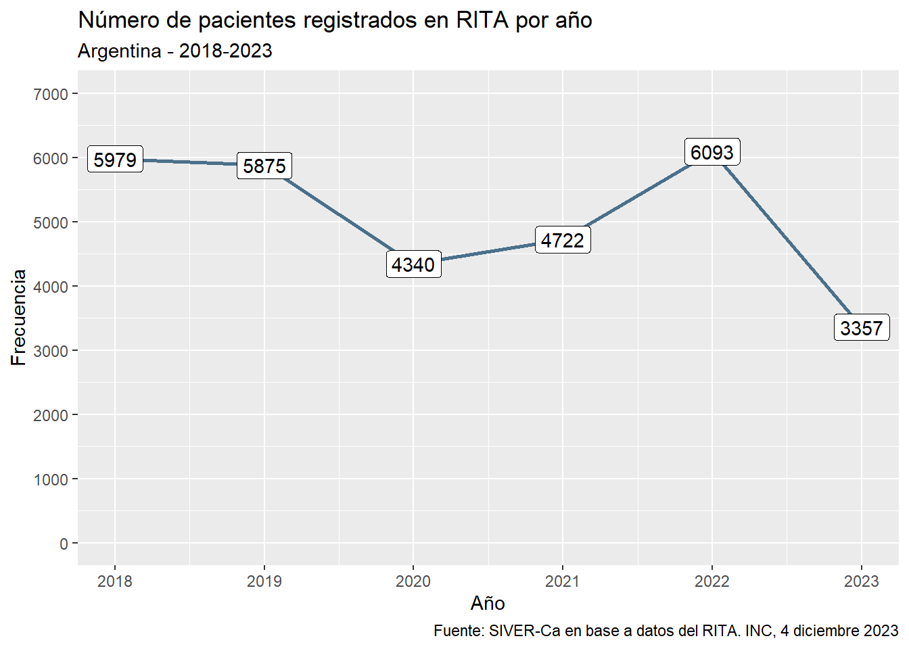
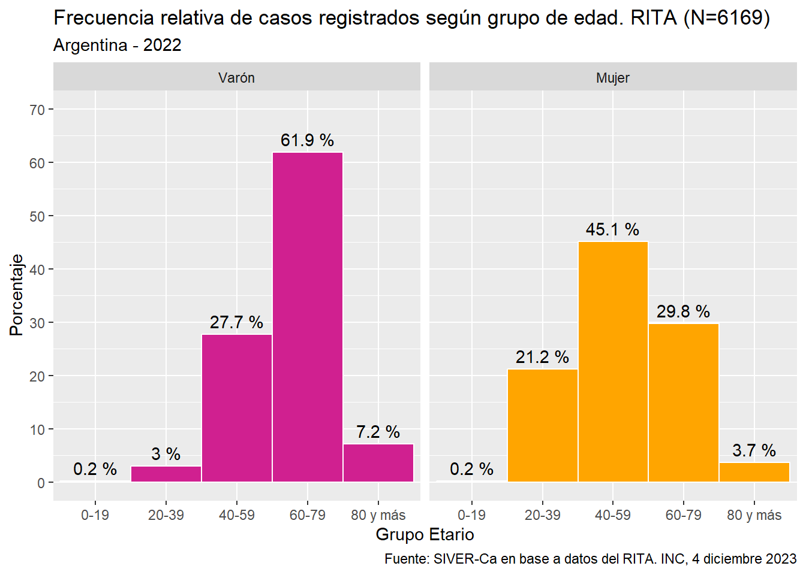

Practico con datos de vigilancia RITA
Residencia de Epidemiología
Introducción
El Registro Institucional de Tumores de Argentina (RITA) es un sistema de registro de cáncer de base hospitalaria diseñado para ser implementado en instituciones que brindan servicios de salud a pacientes oncológicos. El RITA fue implementado a partir del año 2012 por el Instituto Nacional del Cáncer (INC) y tiene como objetivo principal disponer de datos completos, actualizados y de alta calidad de los tumores diagnosticados y/o tratados en el hospital, que puedan ser utilizados para mejorar la calidad de la atención, proporcionando datos clave para distribuir de manera racional los recursos humanos y financieros.
Actualmente, existen 29 instituciones que registran en RITA distribuidas en 15 jurisdicciones del país, que conforman la Red Nacional de Registros Hospitalarios de Cáncer, coordinada por el Sistema de Vigilancia Epidemiológica y Reporte del Cáncer (SIVER-Ca). El relevamiento de la información se realiza en el software RITA, un sistema de información centralizado sobre una plataforma web, desarrollado por el INC, que permite a través de un sistema electrónico realizar la carga y almacenamiento de datos, facilitando el intercambio de información entre los registros de la red.
Este trabajo práctico consiste en realizar diferentes tareas de gestión y extracción de información a datos de prueba de este sistema RITA.
Actividades
Usted es parte del equipo de epidemiólogos del INC y le solicitan realizar los siguientes items en lenguaje R.
Descargue la carpeta RITA con la estructura de carpetas y archivos de datos que la integran. La carpeta está en un archivo que deberá descomprimir rita.zip.
Construya un proyecto de RStudio en torno a la carpeta descargada.
Genere un script con su nombre donde desarrollará los siguientes puntos solicitados.
Lea correctamente el archivo rita.csv que encontrará dentro de la subcarpeta Datos.
Explore su contenido para conocer la cantidad de observaciones y los tipos de variables. Tengo a mano el diccionario de datos que adjuntamos dentro de la carpeta de trabajo.
Detecte la o las variables que tienen más del 80 % de valores faltantes y elimínelas del dataframe.
Todas las variables que se piden construir en estas consignas deben almacenarse dentro del mismo dataframe para poder reutilizarlas en pasos futuros. Cree dos variables numéricas a partir de FEINI (fecha de inicio de síntomas) y FECON (fecha de primera consulta) denominadas FEINI_C y FECON_C según las siguientes condiciones:
Se le coloca el valor 0 si el dato es NA;
1 si tiene una fecha válida;
8 si tiene “N/D”;
y 9 si el dato es “01/06/1900” o “15/06/1900”.
Convierta adecuadamente los formatos de las variables donde hay fechas a date y las variables que terminan en N (menos FECON que es fecha) a factor.
Convierta la variable PTESX a factor especificando en el argumento labels que 1 = “Varón” y 2 = “Mujer”.
Cree una nueva variable llamada año extrayendo el año de la fecha de registro (FEREG).
Construya la variable edad (número de años enteros) a partir del cálculo, utilizando la fecha de nacimiento (FENAC) y la fecha de registro (FEREG).
Construya la variable grupo_etario a partir de la variable edad con los siguientes intervalos:
Intervalo Etiqueta 0 – 19 0-19 20 – 39 20-39 40 – 59 40-59 60 – 79 60-79 80 y edades mayores 80 y más Construya la variable IdGrpTopo a partir de la variable TPGF, recortando los primeros tres caracteres (pasar de código CIE-O a código CIE-O dos dígitos).
Cree una variable llamada demora medida en días (valor que incluya decimales) producto del tiempo transcurrido entre la fecha de inicio de los síntomas y la fecha de 1era. Consulta. Para esta operación excluya las observaciones que en FEINI_C o en FECON_C tengan valores 0, 8 o 9.
Almacene la tabla con los cambios anteriores en un archivo bajo el nombre rita_limpia.csv utilizando el punto y coma como separador.
Obtenga medidas resumen de la variable edad según sexo para el total de las observaciones. Las medidas a presentar son: n, mínimo, máximo, mediana, rango intercuartílico, media, desvío estándar, error estándar e intervalo de confianza.
Construya una tabla de frecuencia relativa de la variable RTATON estratificada por sexo. Pivotee los elementos necesarios para que la estructura final de la cabecera de la tabla sea:
RTATON Mujer Hombre Construya un gráfico de líneas donde se observe la tendencia de la frecuencia absoluta de pacientes registrados en RITA por año (entre 2018 y 2023). Antes asegúrese que el id del paciente (IDPTE) sea único en la tabla de datos. Coloque nombres de ejes, título y todo aquello que le parezca pertinente modificar y/o agregar.
El gráfico debería ser similar a este:
- Construya un gráfico de barras para visualizar las frecuencias porcentuales entre las categorías de la variable grupo_etario facetado según sexo de los registros totales del año 2022. Coloque nombres de ejes, título y todo aquello que le parezca pertinente modificar y/o agregar. Almacénelo en un objeto de nombre grafico_1.
El gráfico debería ser similar a este:

- Exporte el grafico_1 a un archivo jpg de 300 dpi con el mismo nombre dentro de la subcarpeta Gráficos.
Una vez finalizados todos los puntos guarde el archivo con el script y envíelo por mail a christianballejo@gmail.com